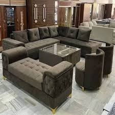
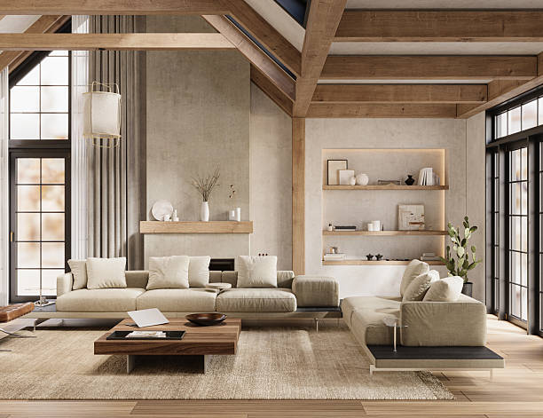
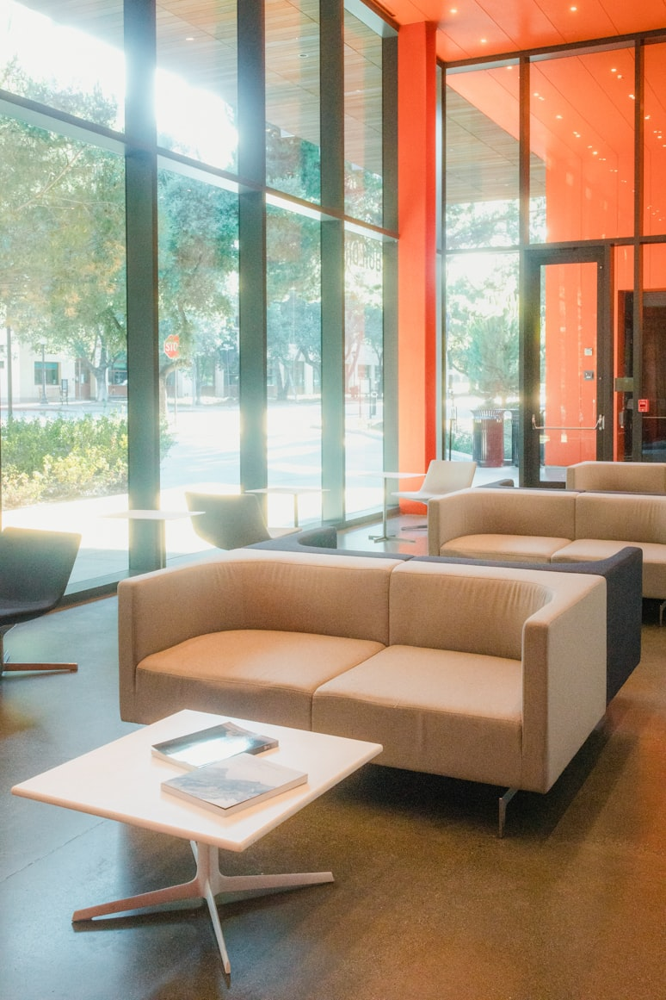

LUXURY SOFAS
Why Choose Our Luxury Collection?
Refining Luxury Living
Experience the perfect blend of timeless elegance and unparalleled comfort. Our handcrafted collection is designed for those who seek the ultimate statement of sophistication in their home.

Sectional Sofa
A sectional sofa is a large seating arrangement made up of multiple sections or pieces that can be joined together. It is commonly designed in L-shape or U-shape, making it ideal for corners and spacious living areas.
Key points:
Available in L-shape and U-shape
Provides large seating capacity
Perfect for corners and big rooms
Can include chaise or ottoman
Some are modular (adjustable pieces)

Living room Sofa
A living room sofa is designed for the main seating area of a home where family members relax and guests are entertained. It focuses on comfort, durability, and style to suit daily use. Living room sofas are available in various designs such as sectional, fabric, or modular to match different interior themes.
key Points:
Comfortable for daily use
Stylish and decorative
Durable materials
Available in many designs and sizes.

Daybed Sofa
A daybed sofa is a versatile piece of furniture that functions as both a sofa and a bed. It is designed with a flat surface and can be used for sitting during the day and sleeping or relaxing at night. Daybed sofas are ideal for small spaces, guest rooms, or lounging areas.
key Points:
Dual purpose (sofa + bed)
Space-saving design
Comfortable for relaxing and napping
Suitable for guest rooms or small homes

office Sofa
An office sofa is designed for professional spaces such as offices, reception areas, and waiting rooms. It focuses on durability, comfort, and a clean, formal appearance. Office sofas are usually made with leather or high-quality fabric to maintain a neat and professional environment..
key Points:
Formal and professional design
Durable and long-lasting
Easy to clean and maintain
Used in reception and waiting areas